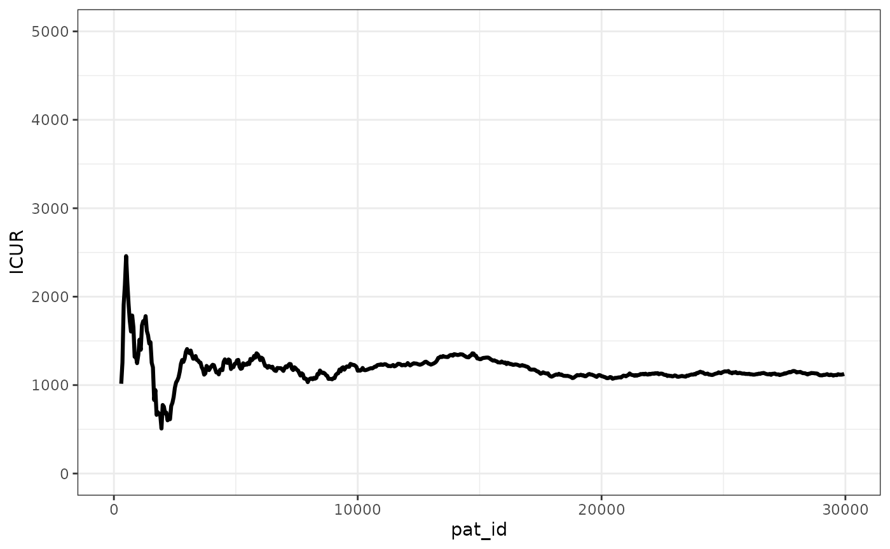
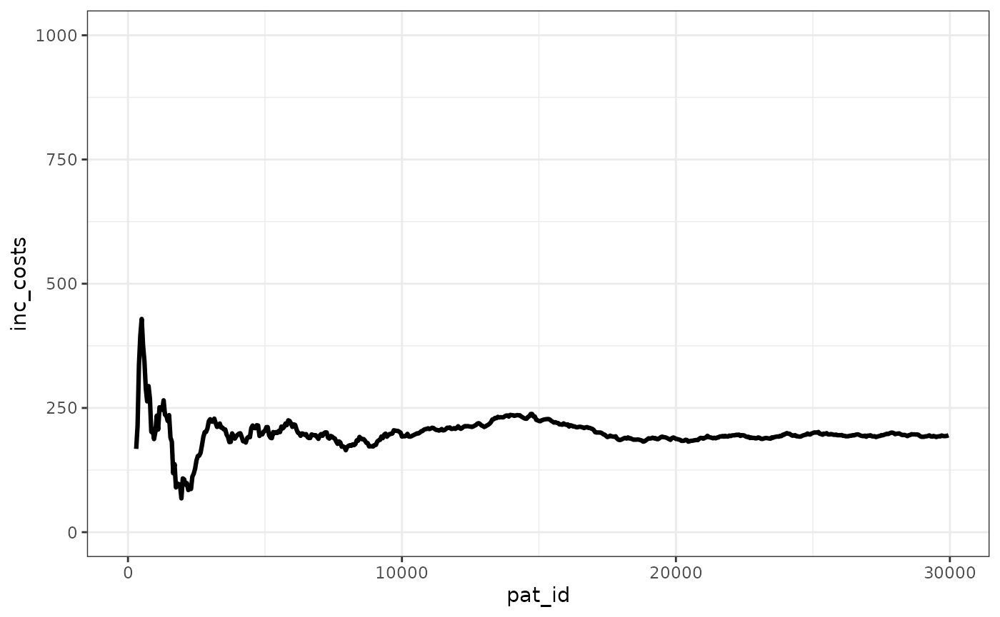
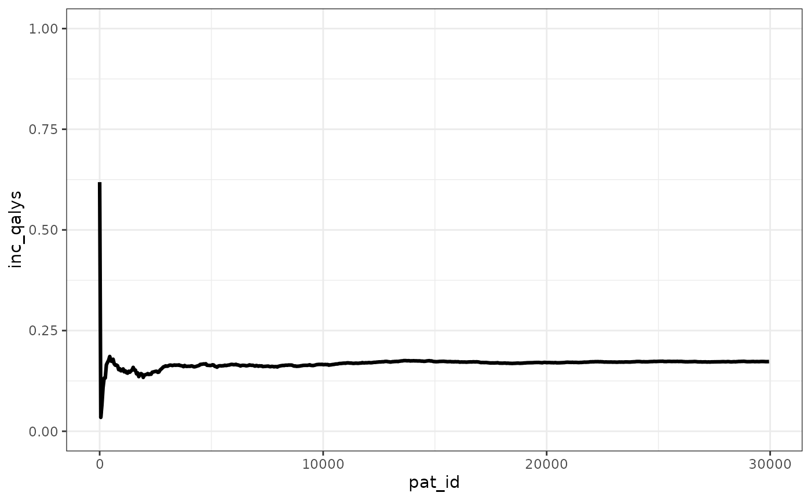

Lin and Briggs (2025) Scottish CVD DES using WARDEN
Javier Sanchez Alvarez
February 27, 2026
Source:vignettes/articles/example_ScotCVD_LinBriggs.Rmd
example_ScotCVD_LinBriggs.RmdIntroduction
This document makes use of the code provided by Lin and Briggs (2025) which use R ad-hoc created functions to translate an existing Markov Scottish CVD model into a DES model. We showcase how the same model would be written with WARDEN.
Note that the model used is not resource constrained, so in WARDEN we
would use with the constrained = FALSE argument (which is
FALSE by default).
Main options
library(WARDEN)
library(flexsurv)
#> Loading required package: survival
library(dplyr)
#>
#> Attaching package: 'dplyr'
#> The following objects are masked from 'package:stats':
#>
#> filter, lag
#> The following objects are masked from 'package:base':
#>
#> intersect, setdiff, setequal, union
library(ggplot2)
library(kableExtra)
#>
#> Attaching package: 'kableExtra'
#> The following object is masked from 'package:dplyr':
#>
#> group_rows
library(purrr)
library(tidyr)
if(!require(readxl)){
install.packages("readxl")
library(readxl)
}
#> Loading required package: readxl
#> Warning in library(package, lib.loc = lib.loc, character.only = TRUE,
#> logical.return = TRUE, : there is no package called 'readxl'
#> Installing package into '/home/runner/work/_temp/Library'
#> (as 'lib' is unspecified)
#> also installing the dependencies 'rematch', 'hms', 'prettyunits', 'cellranger', 'cpp11', 'progress'
if(!require(here)){
install.packages("here")
library(here)
}
#> Loading required package: here
#> Warning in library(package, lib.loc = lib.loc, character.only = TRUE,
#> logical.return = TRUE, : there is no package called 'here'
#> Installing package into '/home/runner/work/_temp/Library'
#> (as 'lib' is unspecified)
#> here() starts at /home/runner/work/WARDEN/WARDEN
# Age in year (continuous)
# Normal distribution
list_age <- list(mean = 60, sd = 0, dist = "rnorm")
# Scottish Index of Multiple Deprivation (continuous, range: 0 to 100)
# Beta distribution
list_SIMD <- list(mean = 60.8, sd = 15, min = 0, max = 100, dist = "rbeta")
# % of diabetes (proportion, range: from 0 to 1)
# Bernoulli distribution for each patient
list_Diabetes <- list(prop = 0, label = c("yes", "no"))
# % of family history (proportion, range: from 0 to 1)
# Bernoulli distribution for each patient
list_FH <- list(prop = 0, label = c("yes", "no"))
# No. of cigarette per day (continuous)
# Gamma distribution
list_CPD <- list(mean = 20, sd = 0, dist = "rgamma")
# Systolic blood pressure (continuous)
# Normal distribution
list_SBP <- list(mean = 160, sd = 0, dist = "rnorm")
# Total cholesterol (continuous)
# Normal distribution
list_TC <- list(mean = 7, sd = 0, dist = "rnorm")
# High density cholesterol (continuous)
# Normal distribution
list_HDL <- list(mean = 1, sd = 0, dist = "rnorm")
# % of male (proportion, range: from 0 to 1)
# Bernoulli distribution for each patient
list_sex <- list(prop = 0.5, label = c("male", "female"))
tm <- 100 # maximum = 100
# time spline variables for cost models were reported up to t = 100
# (Lawson 2016. Appendix. Table A7 A8 A9 A10 A11 A12)
disc <- 0.035 # disc <-0 for undiscounted
# treatment effects on ldl and hdl
list_tx <- list(ldleffect = 0.26,
hdleffect = 1.04,
cost = 13,
disu = 0.001)
sheet_names <- excel_sheets(here::here("data/CVDparameters.xlsx"))
list_coef <- lapply(seq_along(sheet_names),
function(x) {
dt <- read_excel(here::here("data/CVDparameters.xlsx"), sheet = x, col_names = TRUE)
})
names(list_coef) <- sheet_names
list_coef2 <- list_coef
calib <- list(f1 = 0.96,
multi_m = 0.99,
multi_f = 1.05)
# Constant adjustment
j <- which(list_coef$first_event_coef_m$covariate == "constant")
list_coef$first_event_coef_m[j, -1] <- list_coef$first_event_coef_m[j, -1] *
calib$multi_m
list_coef$first_event_coef_f[j, -1] <- list_coef$first_event_coef_f[j, -1] *
calib$multi_f
# coefficient adjustment for TC and HDL for nonCVDdeath first event for male
j <- which(list_coef$first_event_coef_m$covariate %in% c("TC", "HDL"))
list_coef$first_event_coef_m[j, "first_event_nonCVD_death"] <- 0
# coefficient adjustment for TC CBVD and nonCVDdeath first events for female
j <- which(list_coef$first_event_coef_m$covariate %in% "TC")
list_coef$first_event_coef_f[j, c("first_event_nonfatal_CBVD", "first_event_nonCVD_death")] <- 0
list_coef <- lapply(list_coef, function(x) x %>% keep(is.numeric) %>% as.matrix())
list_u_norms <-
list(
u_norms_m = tibble(
age = c("<25", "25-34", "35-44", "45-54", "55-64", "65-74", ">74"),
age_min = c(0, 25, 35, 45, 55, 65, 75),
age_max = c(25, 35, 45, 55, 65, 75, Inf),
Index = c(0, seq(
from = 25, to = 75, by = 10
)),
utility = c(0.831, 0.823, 0.820, 0.806, 0.801, 0.788, 0.774)
),
u_norms_f = tibble(
age = c("<25", "25-34", "35-44", "45-54", "55-64", "65-74", ">74"),
age_min = c(0, 25, 35, 45, 55, 65, 75),
age_max = c(25, 35, 45, 55, 65, 75, Inf),
Index = c(0, seq(
from = 25, to = 75, by = 10
)),
utility = c(0.809, 0.811, 0.802, 0.785, 0.787, 0.777, 0.721)
)
)
list_coef <- append(list_coef, list_u_norms)
rm(list_u_norms)
#RCS derived coefficients, directly from running the original code
nl_RCS <- list(
nl_RCS_pre = list(
male = list(
knots = c(2, 7, 17),
coef_a_1j = c(
`(Intercept)` = -0.0355554000000008,
C_ti1 = 0.0533331869047627,
x2 = -0.0266666285714288,
x3 = 0.00444444166666668
),
coef_a_2j = c(
`(Intercept)` = 2.25111027435915,
C_ti1 = -0.926666325718771,
x2 = 0.113333293706297,
x3 = -0.002222220901321
),
coef_a_3j = c(`(Intercept)` = -8.66666405454546,
C_ti1 = 0.999999754545455),
r2_check = c(0.999999999999985, 0.999999999999987,
0.999999999999926)
),
female = list(
knots = c(2, 8, 17),
coef_a_1j = c(
`(Intercept)` = -0.0355553999999988,
C_ti1 = 0.0533331869047611,
x2 = -0.0266666285714284,
x3 = 0.00444444166666666
),
coef_a_2j = c(
`(Intercept)` = 3.75704726107239,
C_ti1 = -1.3688915683761,
x2 = 0.151111334498837,
x3 = -0.00296296891996898
),
coef_a_3j = c(`(Intercept)` = -10.8,
C_ti1 = 1.2),
r2_check = c(0.999999999999995, 0.999999999999996,
1)
)
),
nl_RCS_postCHD = list(
male = list(
knots = c(1, 6, 14),
coef_a_1j = c(
`(Intercept)` = -0.00591723333333363,
C_ti1 = 0.0177515847883601,
x2 = -0.0177515103174604,
x3 = 0.00591716203703705
),
coef_a_2j = c(
`(Intercept)` = 2.07101078181822,
C_ti1 = -1.02071181916788,
x2 = 0.155325643795095,
x3 = -0.00369823198653204
),
coef_a_3j = c(`(Intercept)` = -8.07693209999999, C_ti1 = 1.15384662727273),
r2_check = c(0.999999999999999, 0.999999999999992, 0.999999999999465)
),
female = list(
knots = c(1, 5, 12),
coef_a_1j = c(
`(Intercept)` = -0.00826453999999968,
C_ti1 = 0.0247935047619046,
x2 = -0.0247934285714285,
x3 = 0.00826446666666666
),
coef_a_2j = c(
`(Intercept)` = 1.61511016623365,
C_ti1 = -0.949231624530986,
x2 = 0.170011662337658,
x3 = -0.00472254343434329
),
coef_a_3j = c(`(Intercept)` = -6.54546038181818,
C_ti1 = 1.09090950909091),
r2_check = c(0.999999999999997, 0.999999999999993,
0.999999999999926)
)
),
nl_RCS_postCBVD = list(
male = list(
knots = c(1,
5, 12),
coef_a_1j = c(
`(Intercept)` = -0.00826453999999968,
C_ti1 = 0.0247935047619046,
x2 = -0.0247934285714285,
x3 = 0.00826446666666666
),
coef_a_2j = c(
`(Intercept)` = 1.61511016623365,
C_ti1 = -0.949231624530986,
x2 = 0.170011662337658,
x3 = -0.00472254343434329
),
coef_a_3j = c(`(Intercept)` = -6.54546038181818, C_ti1 = 1.09090950909091),
r2_check = c(0.999999999999997, 0.999999999999993, 0.999999999999926)
),
female = list(
knots = c(1, 5, 12),
coef_a_1j = c(
`(Intercept)` = -0.00826453999999968,
C_ti1 = 0.0247935047619046,
x2 = -0.0247934285714285,
x3 = 0.00826446666666666
),
coef_a_2j = c(
`(Intercept)` = 1.61511016623365,
C_ti1 = -0.949231624530986,
x2 = 0.170011662337658,
x3 = -0.00472254343434329
),
coef_a_3j = c(`(Intercept)` = -6.54546038181818,
C_ti1 = 1.09090950909091),
r2_check = c(0.999999999999997, 0.999999999999993,
0.999999999999926)
)
)
)Conversion to WARDEN
Inputs
As with any model, we need to load inputs, set initial TTE, event
reactions, utilities/costs, etc. We’ll use the pick_val_v()
function to have all inputs set-up at once.
Though the model is a cohort one except for the SIMD variable, we assume here that we could use one with individual variation, so we define the parameters at the individual level instead of pre-loading them as a cohort (though we could do that as well). Since we do not have any uncertainty around the cohort parameters, we assume those are excluded from the PSA as in the original publication.
Normally, we would model each of the different events independently, i.e., we would allow the model to naturally choose and express the competitive risks (we would have an event for “nonfatal_CHD”, another for “nonfatal_CBVD”, etc), but for the sake of replication we will proceed as in the original paper, merging them into event 1 and event 2.
We create the time to event for the first event within the patient-arm level inputs.
We also create 3 ad-hoc functions to handle the restricted cube spline.
#helper functions for the restricted cube
rcs_du_v <- function(du_all, du, t2, b5, b6, a0, a1, a2, a3){
l_t <- length(t2)
l_du <- length(du)
# Polynomial term per time (length T)
poly_t <- a3 * t2^3 + a2 * t2^2 + a1 * t2 + a0
# Linear predictor matrix T × M
# Each row t: du + b5*t + b6*poly(t)
lp <- outer(t2, b5, "*") + # B5 term: T×M
outer(poly_t, b6, "*") + # B6 * poly term: T×M
matrix(du, l_t, l_du, byrow = TRUE) # add du
# Apply pnorm elementwise
p <- pnorm(lp)
# Weighted sum over DU_ALL (matrix multiply)
drop(p %*% du_all)
}
disu_sec_vec <- function(time, DU_ALL, DU, B5, B6, nl_RCS_ch) {
# Segment indicator
seg <- cut(
time,
breaks = c(-Inf, nl_RCS_ch$knots, Inf),
labels = FALSE,
right = FALSE
)
# Preallocate spline coefficients (per time)
A <- matrix(0, nrow = length(time), ncol = 4)
# Segment 2
s2 <- seg == 2
if (any(s2)) {
A[s2,] <- matrix(nl_RCS_ch[[2]], ncol = 4, nrow = sum(s2), byrow = TRUE)
}
# Segment 3
s3 <- seg == 3
if (any(s3)) {
A[s3,] <- matrix(nl_RCS_ch[[3]], ncol = 4, nrow = sum(s3), byrow = TRUE)
}
rcs_du_v(
t2 = time,
du_all = DU_ALL,
du = DU,
b5 = B5,
b6 = B6,
a0 = A[,1],
a1 = A[,2],
a2 = A[,3],
a3 = A[,4]
)
}
rcs_cost_f <- function(time, nl_RCS_ch) {
out <- numeric(length(time))
i1 <- time < nl_RCS_ch$knots[1]
i2 <- time >= nl_RCS_ch$knots[1] & time < nl_RCS_ch$knots[2]
i3 <- time >= nl_RCS_ch$knots[2] & time < nl_RCS_ch$knots[3]
i4 <- time >= nl_RCS_ch$knots[3]
# Segment 1: below first knot → zero
out[i1] <- 0
# Segment 2: cubic spline piece 2
if (any(i2)) {
t <- time[i2]
out[i2] <- as.numeric(nl_RCS_ch[[2]] %*% rbind(1, t, t^2, t^3))
}
# Segment 3: cubic spline piece 3
if (any(i3)) {
t <- time[i3]
out[i3] <- as.numeric(nl_RCS_ch[[3]] %*% rbind(1, t, t^2, t^3))
}
# Segment 4: linear tail
if (any(i4)) {
t <- time[i4]
out[i4] <- as.numeric(nl_RCS_ch[[4]] %*% rbind(1, t))
}
out
}
#reform parameters so it's clearer for model
l_CVD_inputs <- list(parameter_name = list(
"first_event_nonfatal_CHD_m",
"first_event_nonfatal_CBVD_m",
"first_event_CVD_death_m",
"first_event_nonCVD_death_m",
"post_CHD_m",
"post_CBVD_m",
"first_event_nonfatal_CHD_f",
"first_event_nonfatal_CBVD_f",
"first_event_CVD_death_f",
"first_event_nonCVD_death_f",
"post_CHD_f",
"post_CBVD_f"
),
base_value = list(
list_coef$first_event_coef_m[,1],
list_coef$first_event_coef_m[,2],
list_coef$first_event_coef_m[,3],
list_coef$first_event_coef_m[,4],
list_coef$post_event_coef_m[,1],
list_coef$post_event_coef_m[,2],
list_coef$first_event_coef_f[,1],
list_coef$first_event_coef_f[,2],
list_coef$first_event_coef_f[,3],
list_coef$first_event_coef_f[,4],
list_coef$post_event_coef_f[,1],
list_coef$post_event_coef_f[,2]
),
PSA_dist = list("mvrnorm",
"mvrnorm",
"mvrnorm",
"mvrnorm",
"mvrnorm",
"mvrnorm",
"mvrnorm",
"mvrnorm",
"mvrnorm",
"mvrnorm",
"mvrnorm",
"mvrnorm"
),
a=list(
list_coef$first_event_coef_m[,1],
list_coef$first_event_coef_m[,2],
list_coef$first_event_coef_m[,3],
list_coef$first_event_coef_m[,4],
list_coef$post_event_coef_m[,1],
list_coef$post_event_coef_m[,2],
list_coef$first_event_coef_f[,1],
list_coef$first_event_coef_f[,2],
list_coef$first_event_coef_f[,3],
list_coef$first_event_coef_f[,4],
list_coef$post_event_coef_m[,1],
list_coef$post_event_coef_m[,2]
),
b=list(
list_coef$cov_firstE_CHD_m,
list_coef$cov_firstE_CBVD_m,
list_coef$cov_fatal_CVD_m,
list_coef$cov_fatal_nonCVD_m,
list_coef$cov_surv_postCHD_m,
list_coef$cov_surv_postCBVD_m,
list_coef$cov_firstE_CHD_f,
list_coef$cov_firstE_CBVD_f,
list_coef$cov_fatal_CVD_f,
list_coef$cov_fatal_nonCVD_f,
list_coef$cov_surv_postCHD_f,
list_coef$cov_surv_postCBVD_f
),
n=list(1,1,1,1,1,1,1,1,1,1,1,1),
psa_indicators = list(1,1,1,1,1,1,1,1,1,1,1,1)
)
common_all_inputs <-add_item(input = {
drc <- disc
drq <- disc
ldleffect <- 0.26
hdleffect <- 1.04
cost_tx <- 13
cost <- 0
disu <- 0.001
f1 <- 0.96
multi_m <- 0.99
multi_f <- 1.05
time_horizon <- tm
#patient level (not needed to have the stats part since sd is 0 except for SIMD, but we leave it as example since it does not impact results)
age_v <- rnorm(npats, list_age$mean, list_age$sd)
SIMD_v <- rbeta_mse(npats, list_SIMD$mean/100, list_SIMD$sd/100)
Diabetes_v <- rbinom(npats, 1, list_Diabetes$prop)
FH_v <- rbinom(npats, 1, list_FH$prop)
CPD_v <- rgamma_mse(npats, list_CPD$mean, list_CPD$sd)
SBP_v <- rnorm(npats, list_SBP$mean, list_SBP$sd)
TC_v <- rnorm(npats, list_TC$mean, list_TC$sd)
HDL_v <- rnorm(npats, list_HDL$mean, list_HDL$sd)
sex_v <- rbinom(npats, 1, list_sex$prop)
status_v <- rep(0, npats)
# CVD coefs
pick_val_v(
base= l_CVD_inputs[["base_value"]],
psa = pick_psa(
l_CVD_inputs[["PSA_dist"]],
l_CVD_inputs[["n"]],
l_CVD_inputs[["a"]],
l_CVD_inputs[["b"]]),
psa_ind = psa_bool,
sens_ind = FALSE,
names_out = l_CVD_inputs[["parameter_name"]],
indicator = rep(1,12),
indicator_psa = l_CVD_inputs[["psa_indicators"]],
deploy_env = TRUE
)
ldleffect <- 0.26
hdleffect <- 1.04
disu <- 0.001
odd_seq <- seq(1,10,2)
even_seq <- seq(2,10,2)
q_total <- 0
})
common_pt_inputs <- add_item(input={
sex <- sex_v[i]
bs_age <- age_v[i]
age <- bs_age
SIMD <- SIMD_v[i] * 100
Diabetes <- Diabetes_v[i]
FH <- FH_v[i]
CPD <- CPD_v[i]
SBP <- SBP_v[i]
status <- status_v[i]
u_norms <- if(sex == 1){list_coef$u_norms_m}else{list_coef$u_norms_f}
v_du <- if(sex == 1){list_coef$coef_u_m}else{list_coef$coef_u_f}
v_du <- c(v_du,0) #append 0 for time horizon case
second_event_du_coef <- if(sex == 1){list_coef$second_event_coef_m}else{list_coef$second_event_coef_f}
coef_c1 <- if(sex == 1){list_coef$coef_c1_m}else{list_coef$coef_c1_f}
coef_c1_pre <- coef_c1[,c(1,2,5,6)]
coef_c1_post <- coef_c1[,c(3,4)]
coef_c2 <- if(sex == 1){list_coef$coef_c2_m}else{list_coef$coef_c2_f}
post_CHD <- if(sex == 1){post_CHD_m}else{post_CHD_f}
post_CBVD <- if(sex == 1){post_CBVD_m}else{post_CBVD_f}
rnd_v_1 <- runif(4)
rnd_v_2 <- runif(2)
})
unique_pt_inputs <- add_item(input = {
treatment <- as.numeric(arm == "int")
TC <- TC_v[i] - (TC_v[i] - HDL_v[i]) * treatment * ldleffect
HDL <- HDL_v[i] * hdleffect ^ treatment
m_pat_ch <- matrix(c(age, SIMD, Diabetes, FH, CPD, SBP, TC, HDL, 1), ncol = 9)
first_event_nonfatal_CHD <- if(sex == 1){first_event_nonfatal_CHD_m}else{first_event_nonfatal_CHD_f}
lp_first_event_nonfatal_CHD <- m_pat_ch %*% first_event_nonfatal_CHD[1:9] * f1
first_event_nonfatal_CBVD <- if(sex == 1){first_event_nonfatal_CBVD_m}else{first_event_nonfatal_CBVD_f}
lp_first_event_nonfatal_CBVD <- m_pat_ch %*% first_event_nonfatal_CBVD[1:9] * f1
first_event_CVD_death <- if(sex == 1){first_event_CVD_death_m}else{first_event_CVD_death_f}
lp_first_event_CVD_death <- m_pat_ch %*% first_event_CVD_death[1:9] * f1
first_event_nonCVD_death <- if(sex == 1){first_event_nonCVD_death_m}else{first_event_nonCVD_death_f}
lp_first_event_nonCVD_death <- m_pat_ch %*% first_event_nonCVD_death[1:9] * f1
t_firstE_nonfatal_CHD <- qgompertz(rnd_v_1[1], rate = exp(lp_first_event_nonfatal_CHD), shape = first_event_nonfatal_CHD[10], lower.tail = FALSE)
t_firstE_nonfatal_CBVD <- qgompertz(rnd_v_1[2], rate = exp(lp_first_event_nonfatal_CBVD), shape = first_event_nonfatal_CBVD[10], lower.tail = FALSE)
t_firstE_CVD_death <- qgompertz(rnd_v_1[3], rate = exp(lp_first_event_CVD_death), shape = first_event_CVD_death[10], lower.tail = FALSE)
t_firstE_nonCVD_death <- qgompertz(rnd_v_1[4], rate = exp(lp_first_event_nonCVD_death), shape = first_event_nonCVD_death[10], lower.tail = FALSE)
v_first_times <- c(t_firstE_nonfatal_CHD,t_firstE_nonfatal_CBVD, t_firstE_CVD_death, t_firstE_nonCVD_death, time_horizon)
status_1 = which.min(v_first_times)
tte_first <- v_first_times[status_1]
seq_ch <- if(status_1 == 1){odd_seq}else if(status_1 == 2){even_seq}else{NA}
b5 <- second_event_du_coef[seq_ch,1]
b6 <- second_event_du_coef[seq_ch,2]
})Events
Add Reaction to the Events
This is where the biggest differences are between WARDEN and the
original model. WARDEN simulates each patient individually, while the
original paper takes advantage of full patient vectorization to speed
things up, at the cost of 1) transparency, and 2) lack of adaptability
to other model structures. This is particularly impactful in this model
as both costs and utilities have a restricted cubic spline approach,
which means we take advantage of the adj_val function to
process these functions over time. In this particular case, we use the
argument vectorized_f to accelerate the process because our
functions can handle time as a vector. In any case this process can be
computationally heavy, and in our case we choose to update these values
monthly, as the imprecision is expected to be minimal.
With WARDEN, we would suggest for programmers to model each event individually, e.g., CHD, CBVD, time horizon, and even potentially secondary events if needed. Competing events can easily be deactivated, etc, and it would make the model more transparent, easier to read, debug and understand.
evt_react_list <-
add_reactevt(name_evt = "start",
input = {
#cost
linpred_cost <- c(age, SIMD, FH, 1) %*% coef_c1_pre[3:6,]
linpred_cost <- ifelse(status_1>4,0,linpred_cost[status_1])
coef_cost_1 <- ifelse(status_1>4,0,coef_c1_pre[1,status_1])
coef_cost_2 <- ifelse(status_1>4,0,coef_c1_pre[2,status_1])
cost_2 <- adj_val(
curtime,
next_event()$time,
by = 1/12,
(.time-curtime) * coef_cost_1 +
coef_cost_2 * rcs_cost_f((.time-curtime), nl_RCS[["nl_RCS_pre"]][[2-sex]]),
discount = drc,
vectorized_f = TRUE
)
cost <- linpred_cost +
cost_2 +
cost_tx * as.integer(arm=="int")
#utility
#use adj_val to calculate the utility changing over time between curtime and next event time due to age change
adj_factor <- adj_val(
curtime,
next_event()$time,
by = 1/12,
{cutoff <- .time + bs_age
pos <- findInterval(cutoff, u_norms$age_max) + 1
# Clamp to bounds
pos[pos > length(u_norms$utility)] <- NA
u_norms$utility[pos]},
discount = drq,
vectorized_f = TRUE
)
q_total <- adj_factor - disu * as.integer(arm=="int")
}) %>%
add_reactevt(name_evt = "event_1",
input = {
if(status_1>2){ #if death stop
curtime <- Inf
} else{
age <- age + curtime
m_pat_ch_2 <- matrix(c(age, SIMD, FH, 1), ncol = 4)
lp_post_CHD <- m_pat_ch_2 %*% post_CHD[1:4]
lp_post_CBVD <- m_pat_ch_2 %*% post_CBVD[1:4]
t_postSurv_CHD <- qgompertz(rnd_v_2[1], rate = exp(lp_post_CHD), shape = post_CHD[5], lower.tail = FALSE)
t_postSurv_CBVD <- qgompertz(rnd_v_2[2], rate = exp(lp_post_CBVD), shape = post_CBVD[5], lower.tail = FALSE)
t_second <- ifelse(status_1 == 1, t_postSurv_CHD, t_postSurv_CBVD)
v_second_times <- c(t_second, time_horizon - curtime)
status_2 = which.min(v_second_times)
tte_second <- v_second_times[status_2]
status_2 <- ifelse(is.infinite(tte_second), 0, status_2)
modify_event(c(event_2 = tte_second + curtime))
#cost
linpred_cost <- c(age, SIMD, FH,1) %*% coef_c1_post[3:6,]
linpred_cost <- ifelse(status_1>4,0,linpred_cost[status_1])
coef_cost_1 <- ifelse(status_1>4,0,coef_c1_post[1,status_1])
coef_cost_2 <- ifelse(status_1>4,0,coef_c1_post[2,status_1])
#use adj_val to calculate the cost changing over time between curtime and next event time
cost_2 <- adj_val(
curtime,
next_event()$time,
by = 1/12,
(.time-curtime) * coef_cost_1 +
coef_cost_2 * rcs_cost_f((.time-curtime), nl_RCS[[status_1+1]][[2-sex]]),
discount = drc,
vectorized_f = TRUE
)
cost <- linpred_cost + cost_2
#utility
lp_disusecond <- matrix(c(age, SIMD, FH, 1),ncol = 4) %*% t(second_event_du_coef[, 3:6])
lp_disusecond <- lp_disusecond[seq_ch]
#use adj_val to calculate the utility changing over time between curtime and next event time due to age change and due to disutilities because of secondary events
adj_factor <- adj_val(
curtime,
next_event()$time,
by = 1/12,
{cutoff <- .time + bs_age
pos <- findInterval(cutoff, u_norms$age_max) + 1
# Clamp to bounds
pos[pos > length(u_norms$utility)] <- NA
out <- u_norms$utility[pos] -
disu_sec_vec(.time - curtime,v_du[-6], lp_disusecond, b5, b6, nl_RCS[[status_1+1]][[2-sex]])
out
}
,
discount = drq,
vectorized_f = TRUE
)
q_total <- adj_factor - v_du[status_1]
}
}) %>%
add_reactevt(name_evt = "event_2", #which is death
input = {
curtime <- Inf
})Model
Model Execution
Note that because of the patient-level loop approach, this model is 2x slower to run than the original one (37 seconds vs. 77 seconds).
results <- run_sim(
npats=30000,
n_sim=1,
psa_bool = FALSE,
arm_list = c("int", "comp"),
common_all_inputs = common_all_inputs,
common_pt_inputs = common_pt_inputs,
unique_pt_inputs = unique_pt_inputs,
init_event_list = init_event_list,
evt_react_list = evt_react_list,
util_ongoing_list = util_ongoing,
cost_ongoing_list = cost_ongoing,
ipd = 2
)
#> Analysis number: 1
#> Simulation number: 1
#> Patient-arm data aggregated across events by selecting the last value for input_out items.
#> Time to run simulation 1: 71.54s
#> Time to run analysis 1: 71.54s
#> Total time to run: 71.54s
#> Simulation finalized;Post-processing of Model Outputs
Summary of Example Results
summary_results_det(results[[1]][[1]], arm ="int", wtp = 20000) #print first simulation
#> int comp
#> costs 20205.52 20010.74
#> dcosts 0.00 194.78
#> lys 11.57 11.36
#> dlys 0.00 0.22
#> qalys 8.86 8.69
#> dqalys 0.00 0.17
#> ICER NA 905.60
#> ICUR NA 1125.02
#> INMB NA 3267.88
#> costs_undisc 31193.46 31010.77
#> dcosts_undisc 0.00 182.69
#> lys_undisc 16.13 15.79
#> dlys_undisc 0.00 0.34
#> qalys_undisc 12.27 11.99
#> dqalys_undisc 0.00 0.28
#> ICER_undisc NA 531.00
#> ICUR_undisc NA 654.73
#> INMB_undisc NA 5397.84
#> cost 20205.52 20010.74
#> dcost 0.00 194.78
#> cost_undisc 31193.46 31010.77
#> dcost_undisc 0.00 182.69
#> q_total 8.86 8.69
#> dq_total 0.00 0.17
#> q_total_undisc 12.27 11.99
#> dq_total_undisc 0.00 0.28
psa_ipd <- bind_rows(map(results[[1]], "merged_df"))
psa_ipd[1:10,] %>%
kable() %>%
kable_styling(bootstrap_options = c("striped", "hover", "condensed", "responsive"))| pat_id | arm | total_lys | total_qalys | total_costs | total_lys_undisc | total_qalys_undisc | total_costs_undisc | cost | q_total | cost_undisc | nexttime | number_events | simulation | sensitivity |
|---|---|---|---|---|---|---|---|---|---|---|---|---|---|---|
| 1 | int | 15.82 | 12.09 | 41097 | 22.84 | 17.46 | 59338 | 41097 | 12.09 | 59338 | 45.7 | 2 | 1 | 1 |
| 2 | int | 11.08 | 8.78 | 13798 | 13.95 | 11.06 | 17373 | 13798 | 8.78 | 17373 | 27.9 | 2 | 1 | 1 |
| 3 | int | 18.51 | 14.24 | 27839 | 29.43 | 22.41 | 53728 | 27839 | 14.24 | 53728 | 74.7 | 3 | 1 | 1 |
| 4 | int | 12.34 | 9.74 | 9681 | 16.05 | 12.66 | 13111 | 9681 | 9.74 | 13111 | 47.8 | 3 | 1 | 1 |
| 5 | int | 6.86 | 5.46 | 6210 | 7.83 | 6.23 | 7084 | 6210 | 5.46 | 7084 | 15.7 | 2 | 1 | 1 |
| 6 | int | 11.40 | 8.48 | 24454 | 14.48 | 10.67 | 34045 | 24454 | 8.48 | 34045 | 35.8 | 3 | 1 | 1 |
| 7 | int | 19.17 | 14.37 | 33911 | 31.32 | 23.23 | 67431 | 33911 | 14.37 | 67431 | 85.6 | 3 | 1 | 1 |
| 8 | int | 16.55 | 12.62 | 25637 | 24.50 | 18.68 | 37942 | 25637 | 12.62 | 37942 | 49.0 | 2 | 1 | 1 |
| 9 | int | 9.58 | 7.50 | 14430 | 11.62 | 9.07 | 19255 | 14430 | 7.50 | 19255 | 31.9 | 3 | 1 | 1 |
| 10 | int | 5.57 | 3.86 | 20422 | 6.18 | 4.28 | 22692 | 20422 | 3.86 | 22692 | 12.4 | 3 | 1 | 1 |
We can see that the ICER stabilizes pretty quickly, with the ICUR changing in absolute terms less than 500 GBP after 2,500 patients simulated.
merged_ipd <- psa_ipd %>%
group_by(arm) %>%
mutate(cumul_total_qalys = cumsum(total_qalys)/pat_id,
cumul_total_costs = cumsum(total_costs)/pat_id) %>%
transmute(pat_id, arm, cumul_total_qalys, cumul_total_costs) %>%
tidyr::pivot_wider(names_from = arm, values_from = c(cumul_total_qalys,cumul_total_costs)) %>%
mutate(inc_costs = cumul_total_costs_int - cumul_total_costs_comp,
inc_qalys = cumul_total_qalys_int - cumul_total_qalys_comp,
ICUR = inc_costs/ inc_qalys)
merged_ipd_results <- merged_ipd %>% select(pat_id,inc_costs,inc_qalys,ICUR) %>% slice(seq(1, n(), by = 50))
ggplot(merged_ipd_results, aes(x=pat_id,y=ICUR))+
geom_line(linewidth=1.1) +
ylim(0,5000)+
theme_bw() +
theme(legend.position="bottom")
#> Warning: Removed 6 rows containing missing values or values outside the scale range
#> (`geom_line()`).
ggplot(merged_ipd_results, aes(x=pat_id,y=inc_costs))+
geom_line(linewidth=1.1) +
ylim(0,1000)+
theme_bw() +
theme(legend.position="bottom")
#> Warning: Removed 6 rows containing missing values or values outside the scale range
#> (`geom_line()`).
ggplot(merged_ipd_results, aes(x=pat_id,y=inc_qalys))+
geom_line(linewidth=1.1) +
ylim(0,1)+
theme_bw() +
theme(legend.position="bottom") 